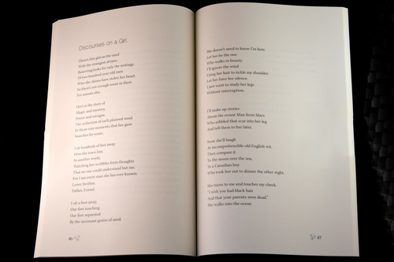

---
layout: default
title: Cross My Heart
--- 
<article>
	<div class="wrapper">
	<h1>Cross My Heart</h1>


	<p><em>Cross My Heart</em> is one of three books of poetry that I designed as part of a book design and production course. The three books were designed as a series with similar cover designs and the same typography for all of the interiors.</p> 
	<div class="jcarousel-wrapper">
	    <div class="jcarousel">
	        <ul>
				<li></li>
				<li></li>
				<li></li>
				<li></li>
				<li></li>
				<li></li>
	        </ul>
	    </div>

	    <a href="#" class="jcarousel-control-prev">&lsaquo;</a>
	    <a href="#" class="jcarousel-control-next">&rsaquo;</a>

	    <p class="jcarousel-pagination"></p>
	</div>
	</div>		

	<div class="download"><a href="cross-my-heart/heart-spreads.pdf" target="_blank">Click here to download a sample PDF</a></div> 
</article>